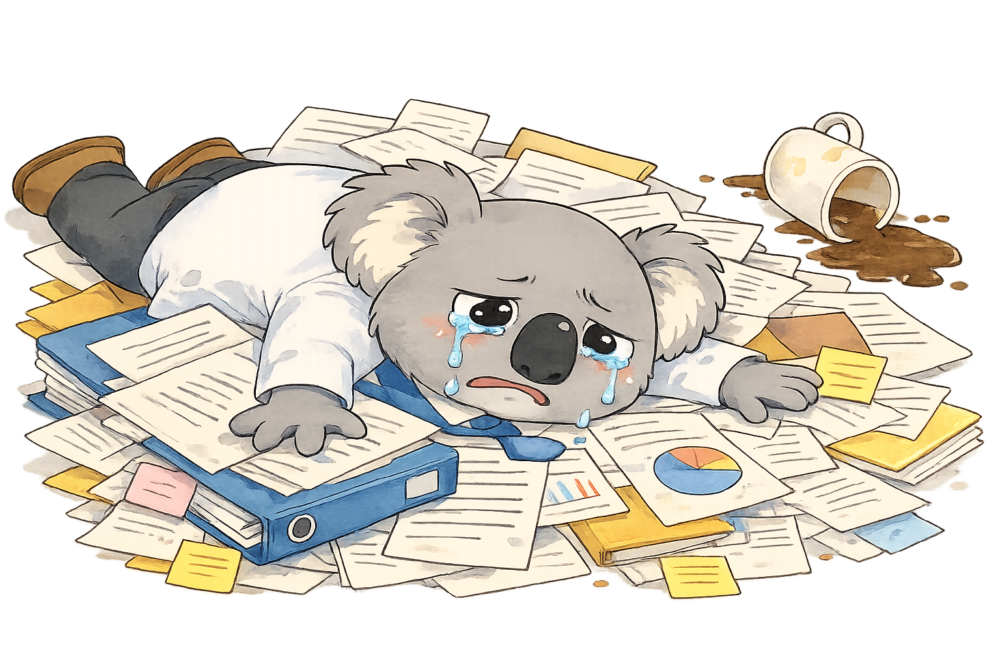
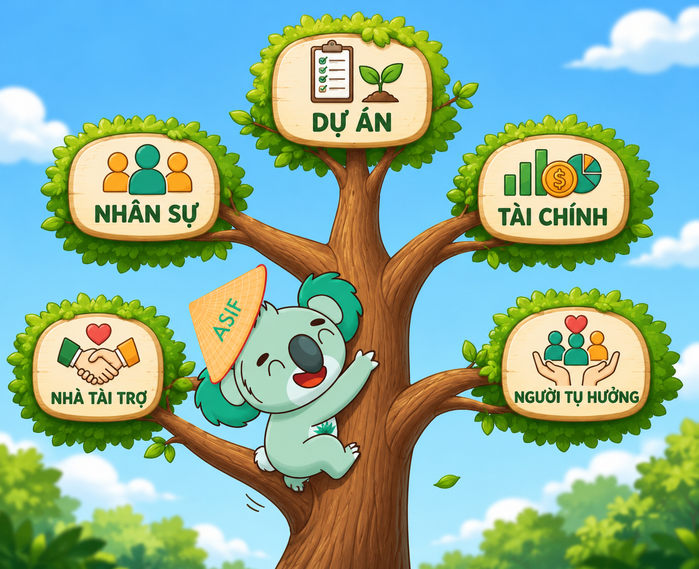
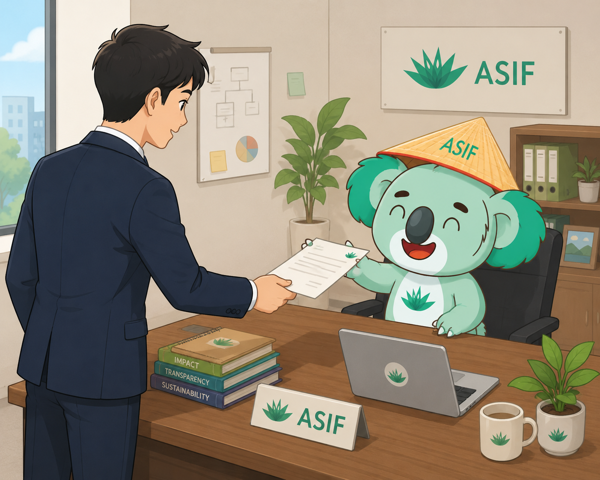
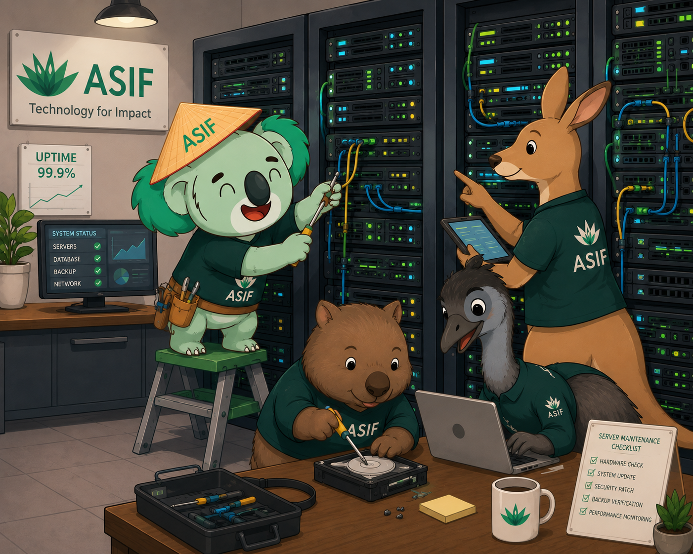
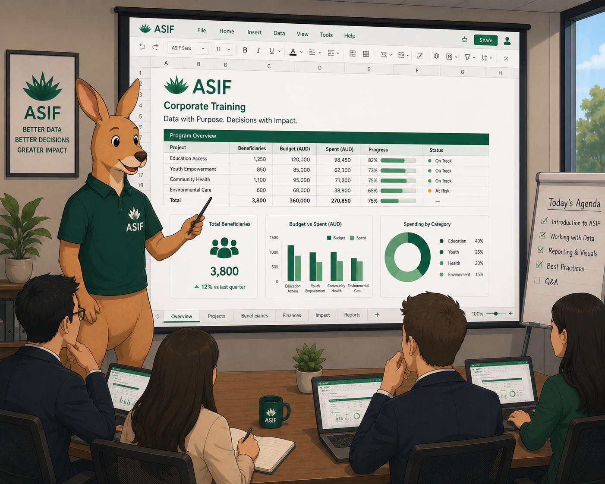
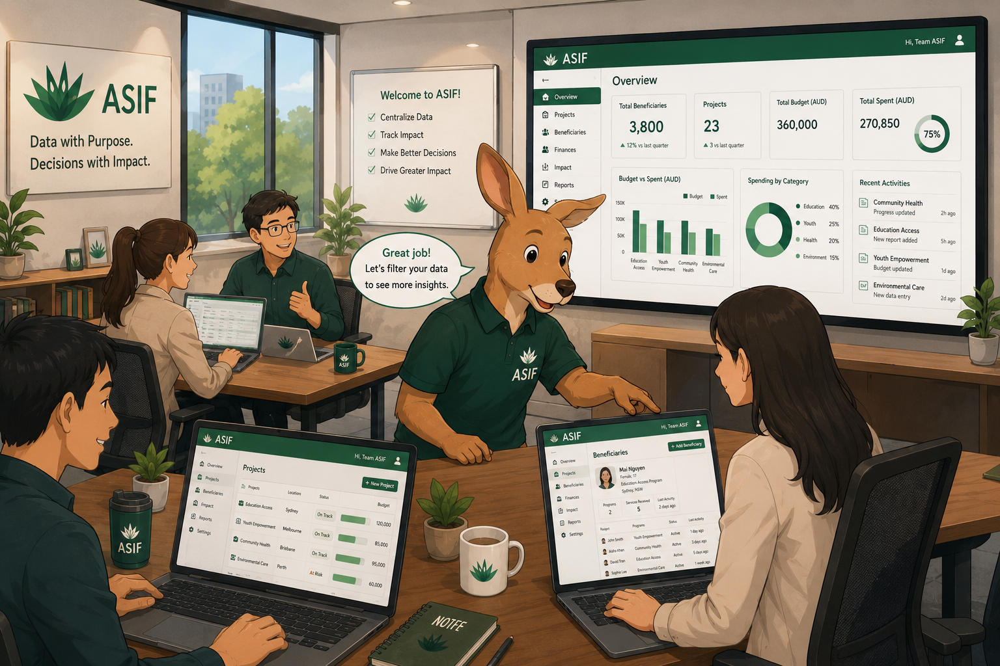

UP – Unified Platform kết nối dự án, tài chính, nhân sự, nhà tài trợ và người thụ hưởng trong một hệ thống duy nhất — thiết kế riêng cho NPOs tại Việt Nam và Australasia.
Những thách thức thực tế khiến các tổ chức phi lợi nhuận tiêu tốn nguồn lực.

Di chuột (hoặc chạm) vào các bong bóng để xem chi tiết từng vấn đề
Every module shares the same data layer — so your project manager, finance team, and program staff always see the same truth.

Di chuột (hoặc chạm) vào từng khối trên cây để xem chi tiết phân hệ
Go live in 4 simple steps — ASIF Foundation supports you at every stage at no cost.

Apply & Verify — Gửi đơn đăng ký NPO. ASIF xét duyệt và ký MOA trong 5–7 ngày làm việc.

Onboarding — ASIF cấu hình môi trường riêng cho tổ chức. Kết nối SSO Microsoft 365 nếu có.

Training — Đội ngũ ASIF và đối tác công nghệ hỗ trợ đào tạo và tài liệu hướng dẫn.

Go Live — Tổ chức bắt đầu sử dụng. ASIF duy trì hạ tầng và hỗ trợ kỹ thuật liên tục.
UP vận hành trên nền tảng Microsoft Azure với đăng nhập một lần (SSO) qua Microsoft 365, mã hóa dữ liệu và cam kết uptime 99.9%.
UP was built specifically for the operational realities of nonprofits — not adapted from a corporate ERP.
"Trước khi dùng UP, chúng tôi cần 3 ngày để tổng hợp báo cáo quý. Bây giờ chỉ cần 20 phút — số liệu luôn chính xác, minh bạch với nhà tài trợ."
UP hoàn toàn miễn phí cho các tổ chức phi lợi nhuận đủ điều kiện — được tài trợ bởi ASIF Foundation. / UP is completely free for eligible NPOs, sponsored by ASIF Foundation.